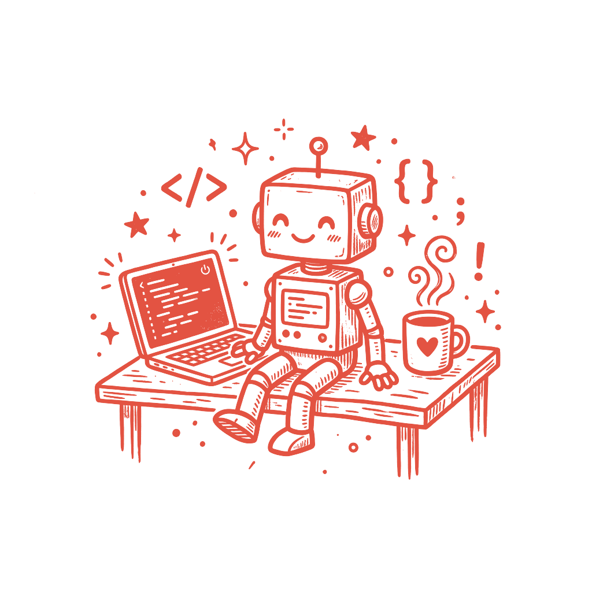

// 01 • PROFESYONEL PROFİL
Baran Bozkurt
Web Geliştirici • AI Destekli Ürün Geliştirme

Yaklaşık 6 yıldır web geliştirme ile ilgilenen, tasarım ile teknik uygulamayı birlikte ele alan bir geliştiriciyim.
SEO, GEO (Generative Engine Optimization), UX ve UI perspektiflerini geliştirme sürecine dahil ederek; anlaşılır, erişilebilir, kullanıcı odaklı ve arama görünürlüğü güçlü web deneyimleri üretmeye odaklanıyorum.
“
AI agentlarını araştırma, planlama, kodlama, hata ayıklama ve kalite kontrol süreçlerinde aktif biçimde kullanıyorum.